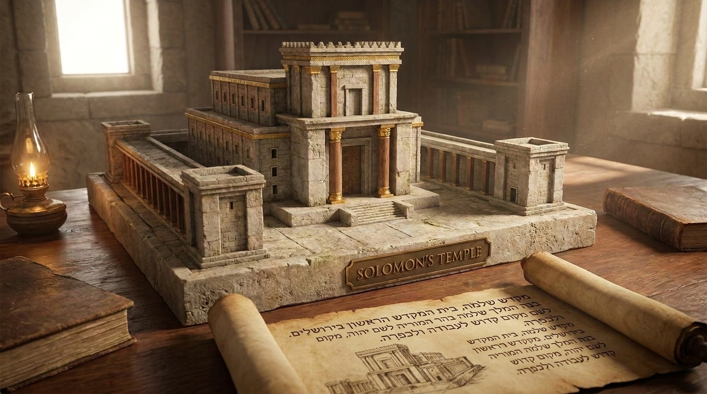

Glória e Divisão do Reino
O livro de 1 Reis relata o auge da monarquia sob a sabedoria e riqueza do rei Salomão, culminando na construção do glorioso Templo em Jerusalém. No entanto, o livro também narra a trágica divisão da nação em dois reinos (Israel no norte e Judá no sul) devido à idolatria, e introduz o poderoso ministério do profeta Elias confrontando os falsos deuses.
Ficha Técnica
- Autor: Desconhecido (a tradição judaica atribui ao profeta Jeremias)
- Tema Principal: O reinado de Salomão, a construção do Templo, a divisão do reino e a fidelidade de Deus em enviar profetas.
- Versículo-Chave: "E, se você andar nos meus caminhos e obedecer aos meus decretos e aos meus mandamentos, como fez o seu pai, Davi, eu prolongarei a sua vida." (1 Reis 3:14)
Estrutura
- A ascensão e o reinado de Salomão (Caps. 1-4)
- A construção e dedicação do Templo (Caps. 5-8)
- A queda de Salomão e a divisão do Reino (Caps. 9-16)
- O ministério do profeta Elias (Caps. 17-22)